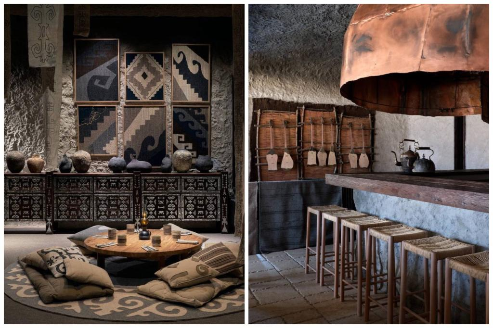

Kıiz úı was founded in 2022 with a mission to preserve and share the rich culinary heritage of Kazakhstan. We combine ancient Kazakh recipes with modern cooking techniques to offer an authentic dining experience.
From the beginning, our focus has been on using the freshest local ingredients to create traditional dishes with a contemporary twist. Our passionate team of chefs strives to bring the true flavors of Kazakh cuisine to life.
Over the years, Kıiz úı has become a symbol of Kazakh culinary culture, recognized for its quality and authenticity. Join us to experience the essence of Kazakh cuisine and be part of our culinary journey.
Head Chef: Our Head Chef is an experienced professional who lovingly and respectfully prepares dishes according to traditional Kazakh recipes. He infuses each dish with a piece of his soul and aims to maintain the authenticity of the flavors.
Our Team: Our team consists of skilled chefs, waitstaff, and service personnel who are dedicated to creating an unforgettable culinary experience for our guests.
Take a look at how our restaurant and kitchen look to learn more about our cozy interior and the cooking process:
